Table shuffleboard
United States · Dexterity and skill gamesTaco bat game
Cuba · Street and playground games

Tag
Myanmar · Street and playground games
Tahtib
Egypt · Dances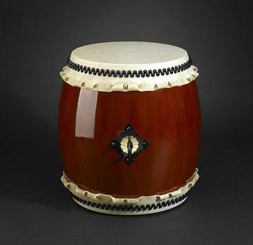

Tais
Timor-Leste · Crafts and makingTaiwanese mahjong
Taiwan · Board and table games
Takienta Tower-House Builder
Togo · Crafts and making

Talavera tile painting
Mexico · Crafts and making
Talking drum
Nigeria · Musical instruments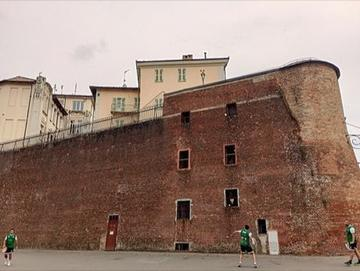
Tamburello
Italy +1 · Crafts and making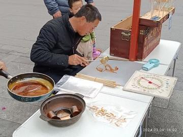
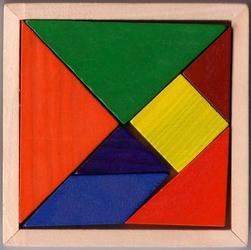
Tanzanian draughts
Tanzania · Board and table games
Tap-Tap Bus Painting
Haiti · Crafts and making
Tar and mugham modes
Azerbaijan · Musical instruments
Tarakasi silver filigree
Worldwide · Crafts and making

Tartan Sett Weaving
United Kingdom +1 · Crafts and makingPlay preview · in the Textile Crafts of the World app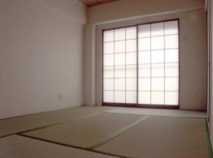

Tatreez Palestinian Cross-Stitch
Palestine +1 · Crafts and makingPlay preview · in the Textile Crafts of the World app


Tbourida
Morocco · Sports with animal partners
Tchiloli masked play
Sao Tome and Principe · Performance and storytellingTchouba
Mozambique · Board and table games
Tea Horse Road Caravan
China · Board and table games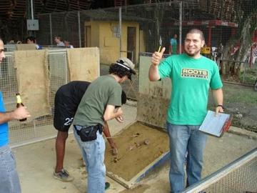

Temari Thread-Ball Patterns
Japan · Crafts and makingPlay preview · in the Paper & Paint of the World app
Ten Ten
Nigeria · Dexterity and skill games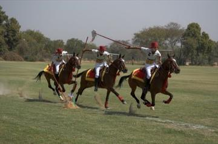
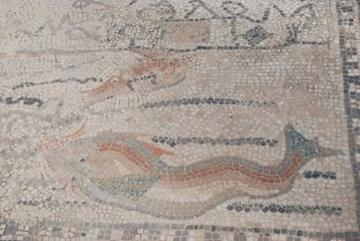
Tessellated Mosaic Making
Italy +1 · Crafts and makingPlay preview · in the Craft Designs of the World app
Texas 42
United States · Board and table gamesThai checkers
Thailand · Board and table games
Thai fruit and vegetable carving
Thailand · Crafts and makingThai pebbles
Thailand · Dexterity and skill games
Thin Hama
Maldives · Board and table games
Thung chai basket-boat spinning
Vietnam · Racing
Tien gow
China · Board and table games
Tifinagh Letter Puzzle
Niger +3 · Puzzles and mind gamesTikhi
Laos · Street and playground games
Timorese coffee cherry harvest and sort
Timor-Leste · Crafts and making
Tingatinga painting
Tanzania · Crafts and making
Tinikling
Philippines · Dexterity and skill games
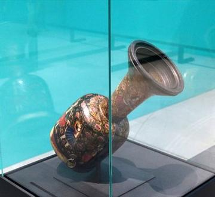
Tombak goblet drum rhythms
Iran · Musical instrumentsTombola
Italy +1 · Racing
Toquilla straw hat weaving
Ecuador · Crafts and making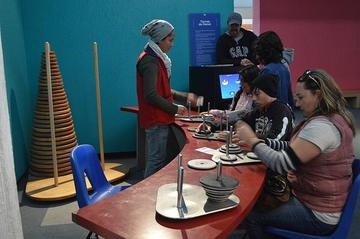

Traditional contests at Micronesian Games
Micronesia · Street and playground games
Traditional wrestling
Cameroon · Street and playground games
Trânta
Moldova +1 · Wrestling and martial sportsTree-pull contest
Fiji · Street and playground games
Trembita
Ukraine · Musical instruments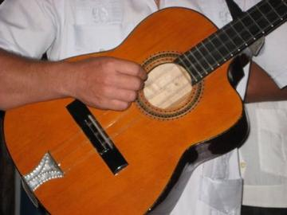
Tres cubano
Cuba · Musical instruments
Trick Roping
United States · Dexterity and skill gamesTsoro
Zimbabwe · Board and table games

Tsugaru Shamisen
Japan · Musical instruments
Tuareg Tea
Niger · Crafts and making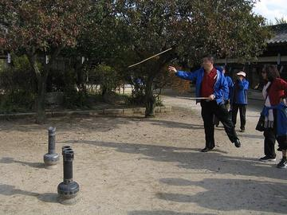
Tuho
South Korea · Dexterity and skill gamesTuk Band
Barbados · Other traditions
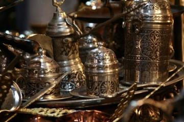
Turkish coffee in the cezve
Turkey · Crafts and making
Turkmen Akhal-Teke equestrian games
Turkmenistan · Street and playground games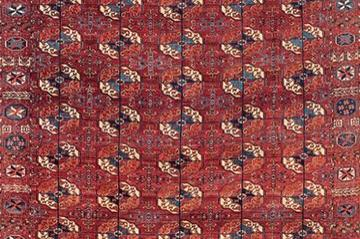
Turkmen gul carpet
Turkmenistan · Crafts and making
Turkmen Silver Jewelry Designer
Turkmenistan · Crafts and making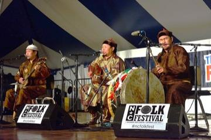
Tuvan Throat Singing
Mongolia +1 · Archery, throwing and target games
Two-up
Australia · Board and table games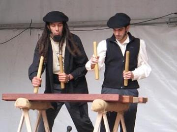
Txalaparta Duet
Spain · Musical instruments